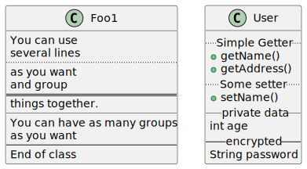
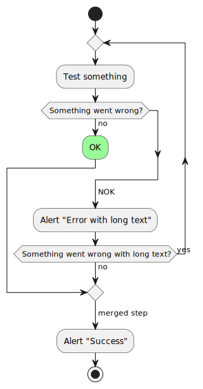
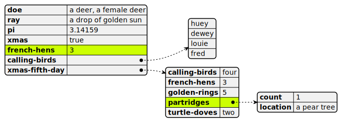

Diagrams and Visualization¶
In DI-engine, we often need to draw images and measure and visualize some information. This section will introduce these contents in detail.
PlantUML¶
PlantUML is a tool that can be used to draw UML and other images. For details, please refer to the official website of PlantUML. Its biggest feature is that it is based on code, does not need to pay attention to typesetting, and is very easy to maintain.
For example, we can draw class diagrams
You can draw the flow chart of the algorithm
YAML data can also be plotted
We can use plantumlcli tool to generate images. For details, please refer to plantumlcli GitHub repository.
Note
In the document of DI-engine, plantuml has been integrated, which can automatically generate images based on source code. For example, we can create the file plantuml-demo.puml under the current path.
1@startuml
2Alice -> Bob: Authentication Request
3Bob --> Alice: Authentication Response
4
5Alice -> Bob: Another authentication Request
6Alice <-- Bob: Another authentication Response
7@enduml
When compiling the document, the image plantuml-demo.puml.svg in SVG format will also be generated automatically, as shown below.
graphviz¶
For more complex topology diagrams, we can use tool Graphviz to draw:
For example, we can use graphviz to quickly draw a graph structure, as shown in the following code
1digraph G {
2 start -> a [label="3"];
3 start -> d [label="2"];
4
5 a -> b [label="1"];
6 b -> c [label="2"];
7 d -> c [label="3"];
8
9 a -> end [label="5"];
10 c -> end [label="3"];
11}
The drawn image is shown below

draw.io¶
draw.io is a very simple and easy-to-use online image editing tool, which can be used to edit workflow diagram, BPM, organization diagram, UML diagram, ER diagram, network topology, etc:
draw.io’s biggest feature is the drag drawing method, so it can realize “what you see is what you get”.
snakeviz¶
When we need to measure the speed of a program or part of a program, we can use the native cProfile, while sneakviz can display the speed measurement results in a visual form: